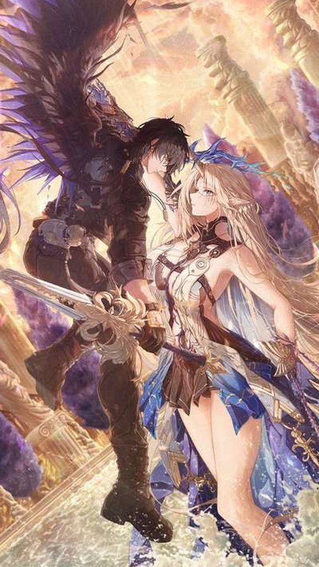
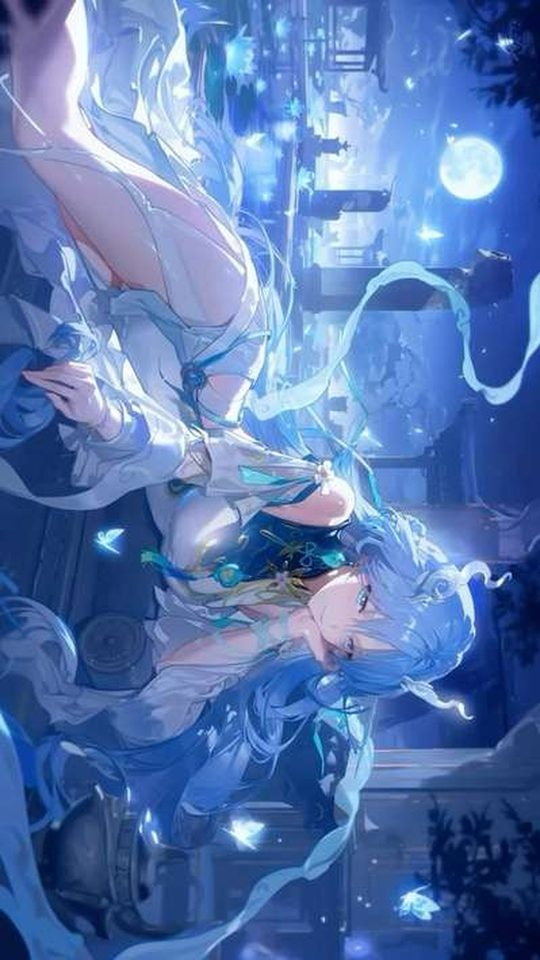
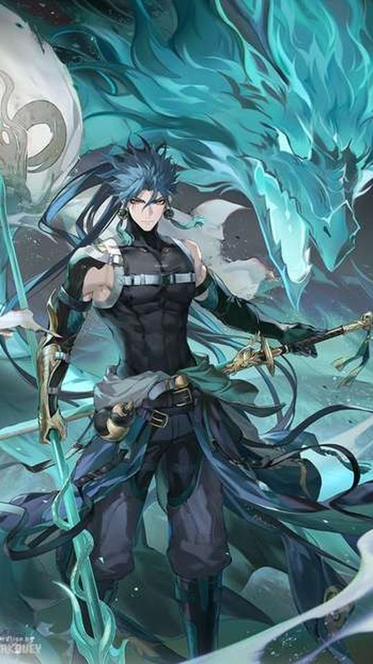
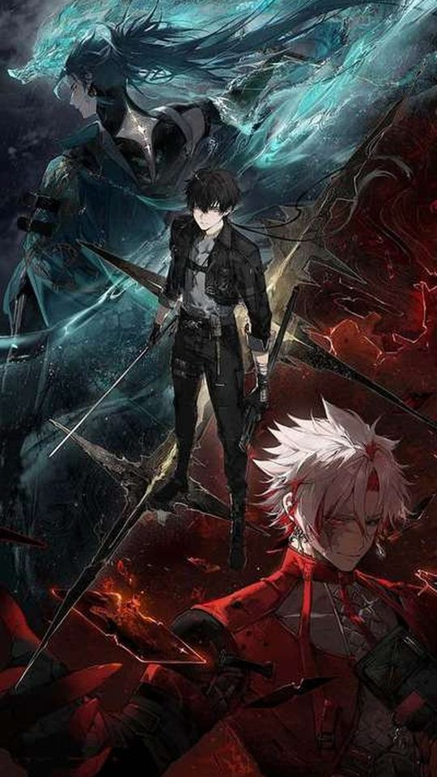

Wuthering Waves Wallpapers: Hsin, Carlotta and the Rest

Wuthering Waves has a distinctive visual identity, and its official character art is unusually well suited to portrait phone screens. This guide looks at the game's art direction and then works through Hsin, Carlotta, Jinhsi, Camellya and the Shorekeeper, explaining the palette each one uses and why the official illustrations crop so cleanly. You will finish knowing which characters to reach for and how to get the most out of their art on a home screen.
The game's high-contrast art direction
Wuthering Waves sits between science fiction and fantasy, and its art direction leans into contrast. Characters are drawn with sharp, angular silhouettes, and their designs often pair a dark base with bright, saturated accents, so a figure reads clearly even against a busy background. Where many games keep their palettes soft and even, Wuthering Waves deliberately pushes the lights brighter and the darks deeper.
That contrast is the reason the game's art works so well as a wallpaper. A high-contrast image survives being scaled down and partly covered by icons, because the bright accents stay visible while the dark areas provide quiet space for the clock and widgets. The official illustrations also tend to be composed with the character centred and the background pushed back, which is close to the framing a portrait phone wants.
Hsin: the Moon Fox, built on light and lanterns
Hsin is the Moon Fox, the Sentinel of Mengzhou, and her visual identity is tied to moonlight and lanterns rather than to a single loud colour. Her official art leans on glowing warm lantern light against cooler night tones, with a fox motif drawn from the constellation her design references. As a newer addition to the roster, her promotional illustrations have been composed around atmosphere, with the character framed against soft light and open sky.
For a wallpaper, Hsin is a strong choice for a lock screen, because her images are built around a bright focal point surrounded by darker space. That structure means the clock can sit in the calm area while her face and the lantern glow remain the centre of attention. If you use one of her festival-themed illustrations, crop so the lanterns sit low and her face stays in the upper third.

Carlotta: glacio ice in silver and blue
Carlotta is a Glacio character, and her palette follows the element's cool, icy theme: silver, pale blue and white, with the polished, elegant finish you would expect from a member of the Montelli family. Her official art tends to be composed with a lot of negative space, often against a soft or muted backdrop, which is ideal for a phone because the character stands out without the background competing.
Cool palettes like Carlotta's are calm and easy to read, and they sit comfortably behind almost any icon set. The one thing to watch is brightness: a very pale image can make a white clock hard to see. If that happens, look for an illustration with a darker backdrop, or place her on a night-time scene rather than a bright one.
Jinhsi: spectro light in gold and white
Jinhsi, the Magistrate of Jinzhou, is a Spectro character, and her art is built on light. Her palette runs through white, gold and pale amber, with a bright, dignified presentation that matches her role as a leader. Spectro's association with light means her illustrations often include glowing or radiant effects, which give her images a clean, high-key look.
That brightness makes her a good fit for a light-themed phone, where a white or pale background feels natural. On a dark theme she still works, because her gold and white accents glow against the darker surroundings. Her upright, formal poses crop cleanly to portrait, and her official art usually keeps her centred, so a straight crop needs very little adjustment.

Camellya: havoc red, vines and darkness
Camellya is a Havoc character, and her palette is the darkest in this group: deep reds, blacks and the muted greens of the vines and blooms associated with her. Her design carries a deliberate sense of danger, and her official art often uses shadow and dark red to create a moodier, heavier image than the rest of the roster. The result is one of the most dramatic wallpapers the game offers.
For a phone, Camellya is a natural fit for a dark theme, where her red accents become the brightest points on the screen. Crop so her face and the red of her design stay visible, and avoid frames where the darkness swallows the character entirely, since a nearly black wallpaper can make the screen feel empty.

The Shorekeeper: spectro, celestial and serene
The Shorekeeper is a Spectro character from the Black Shores, and her design is calm and celestial, built on blues, blacks and white with a starry, oceanic feel. Where Jinhsi's light is warm and golden, the Shorekeeper's is cool and deep, closer to a night sky than a sunrise. Her art tends to be composed with a lot of open space around the character, which is exactly what a portrait wallpaper wants.
That open composition is her biggest advantage. Because her official art leaves room around her, you can crop to a tall screen without cutting off anything important, and the calm areas give your icons somewhere to sit. She is one of the safest picks if you want a wallpaper that feels quiet and uncluttered.
Why the official art crops well to portrait
- Characters are usually centred, so a straight portrait crop keeps the subject in the middle of the frame.
- High contrast means bright accents survive being scaled down and partly covered by icons.
- Many illustrations leave deliberate negative space, which gives the clock and widgets a clean area to sit in.
- Sharp, angular silhouettes stay readable at small sizes, unlike softer designs that blur together.
- Official art is released at high resolution, so it downscales cleanly without losing line detail.
When you crop, keep the character's face and their brightest accent in the upper third, and leave the lower area simple for the dock. If an image is too narrow for your screen, fill the sides with a flat colour taken from the character's palette rather than stretching the art, which would distort the linework.
Frequently asked questions
Which Wuthering Waves character makes the best wallpaper?
It depends on the mood you want. The Shorekeeper and Carlotta are the calmest and easiest to live with, thanks to their cool palettes and open compositions. Camellya is the most dramatic, and Hsin works well on a lock screen because her art is built around a bright focal point.
Why does Wuthering Waves official art crop so well to a phone?
Because the game's art direction uses high contrast and centred compositions with deliberate negative space. Those qualities mean a portrait crop keeps the character visible while leaving clean areas for the clock and icons, and the high resolution holds up when scaled down.
Is Hsin a good wallpaper character?
Yes, especially for a lock screen. Her illustrations are built around lantern light and a moonlit atmosphere, so they tend to have a bright focal point surrounded by darker space, which leaves room for the clock. Crop so her face stays in the upper third and the lanterns sit lower.
Should I use official art or fan art for Wuthering Waves wallpapers?
Official art is the safer default, because it is high resolution and composed for a centred, readable crop. Fan art can be more varied and expressive, but the resolution and framing differ from piece to piece, so check both before you set one as your background.